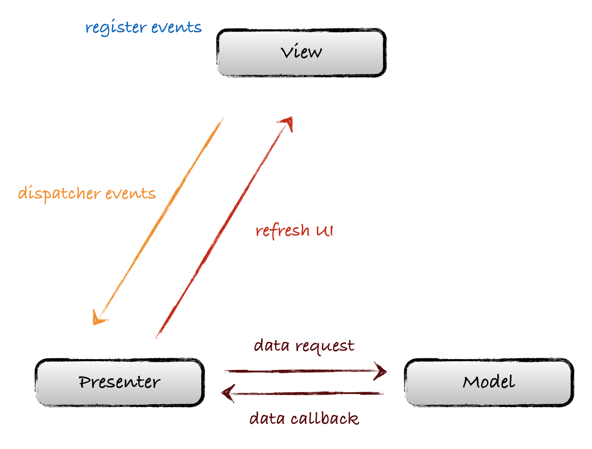

class: center, middle, dark background-image: url() # Alisouring network, structure, testing .right.gary_light[[Wang Jie](http://github.com/wangjiegulu)] .middle[[Github](https://github.com/wangjiegulu)] .middle[[Blog](http://www.cnblogs.com/tiantianbyconan)] --- # Network 对此进行了二次封装。 详见：Http2 (<http://www.atatech.org/articles/52913>) --- # Structure -- **.red[之前缺点]** 1. 表现层与逻辑层之间是强耦合的 2. 层次不够清晰导致无法根据模块划分指责 3. 不够灵活，在不变动逻辑层的情况下无法较容易地替换表现层 4. 无法方便地进行单元测试 5. 代码复用层度较低 6. ... --- # Structure **.blue[目前实现]** 使用.rfs[MVP]对结构进行分层处理 之前总结的博客：<http://www.cnblogs.com/tiantianbyconan/p/5036289.html> --- ### 第一阶段 - **View层**: Layout布局和.rfs[Activity]/.rfs[Fragment]/.rfs[ViewGroup] - **Presenter层**: 与Model层进行业务的交互，完成后再与View层交互进行回调来刷新UI。  --- ### 第一阶段 -- .blue[优点]: 业务逻辑的工作都交给了Presenter中进行，使得View层与Model层的耦合度降低，Activity中的工作也进行了简化。 -- .red[缺点]: 但是在实际项目中，随着逻辑的复杂度越来越大，Activity臃肿的缺点仍然体现出来了，因为Activity中还是充满了大量与View层无关的代码，比如各种事件的处理派发，就如MVC中的那样View层和Controller代码耦合在一起无法自拔。 --- ### 第二阶段（现阶段） 增加.rfs[Controller]层 特点: 1. Controller的作用仅仅是处理事件并根据事件通过维护的Presenter对象派发到对应的业务中，也就是说View层只有一个Controller的对象 2. View层不会主动去调用Presenter层 3. 但是Controller层和Presenter都可能会回调到View层来刷新UI --- ### 第二阶段（现阶段） <img src="https://raw.githubusercontent.com/wangjiegulu/wangjiegulu.github.com/master/images/mvp/MVP_Controller.jpg" width=600/> --- ## 依赖注入(DI) -> Rapier 各层之间使用依赖注入的方式来提供对象实例 <https://github.com/wangjiegulu/Rapier> ### 支持的注解： 避免与Dagger2冲突，不使用 [JSR 330](https://jcp.org/en/jsr/detail?id=330) 标准 1. .rfs[@RModule]: 用于指定提供依赖对象的注入源（依赖图表） 2. .rfs[@RInject]: 用于注入对象 3. .rfs[@RNamed]: 注入相同类型对象时来进行区分 4. 支持.rfs[RLazy]懒加载的方式去进行注入 --- ## 依赖注入(DI) -> Rapier ### 怎么使用？ --- # Testing - 使用 .rsf[Espresso] 进行UI测试 - 使用JUnit进行 .rfs[Presenter] 测试 - 数据库测试、 - ... --- # Testing ### 使用 .rsf[Espresso] 进行UI测试 **注意** - 测试针对 .rfs[View] 层中所有"onXXX()"方法，这些方法中所作的都是UI操作 - 要Mock掉 .rfs[View] 层中的 .rfs[Controller] 或者 .rfs[Presenter]对象，避免进行任何业务逻辑。具体通过Mock一个 .rfs[Module]的方式 - 为了便于测试，需要把所有同步操作修改成异步操作，因为，之后所有的多操作都是走的.rfs[RxJava]，所以需要修改.rfs[RxJava]中的.rfs[Scheduler] - 使用兼容测试的.rfs[Log]工具 -> .rfs[XLog] --- # Testing ### 使用JUnit进行 .rfs[Presenter] 测试 把.rfs[Presenter]设定为纯Java的JUnit单元测试： - 对.rfs[Presenter] 和 .rfs[Android SDK]进行隔离 - 可以基于.rfs[PC上的JVM]来进行单元测试，也就是说，这个测试不需要.rfs[Android环境]，省去了安装到手机或者模拟器的步骤 **注意** - 不能有任何.rfs[Android SDK]出现在这一层，比如“TextView”、“SQLiteDatabase”、“Log”等等 - 为了便于测试，需要把所有同步操作修改成异步操作，因为，之后所有的多操作都是走的.rfs[RxJava]，所以需要修改.rfs[RxJava]中的.rfs[Scheduler] - 使用兼容测试的.rfs[Log]工具 -> .rfs[XLog] --- # Testing ### 数据库测试 之后增加.rfs[ORM]框架后再引入这方面的测试 --- class: center, middle #That's all, Thank you.